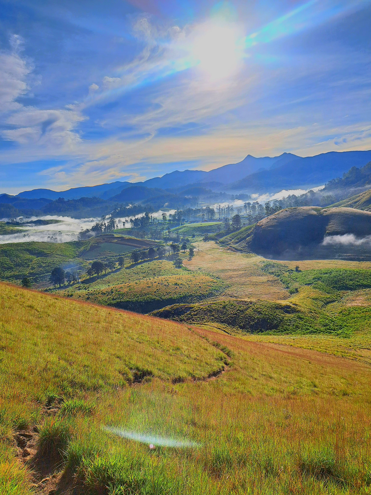
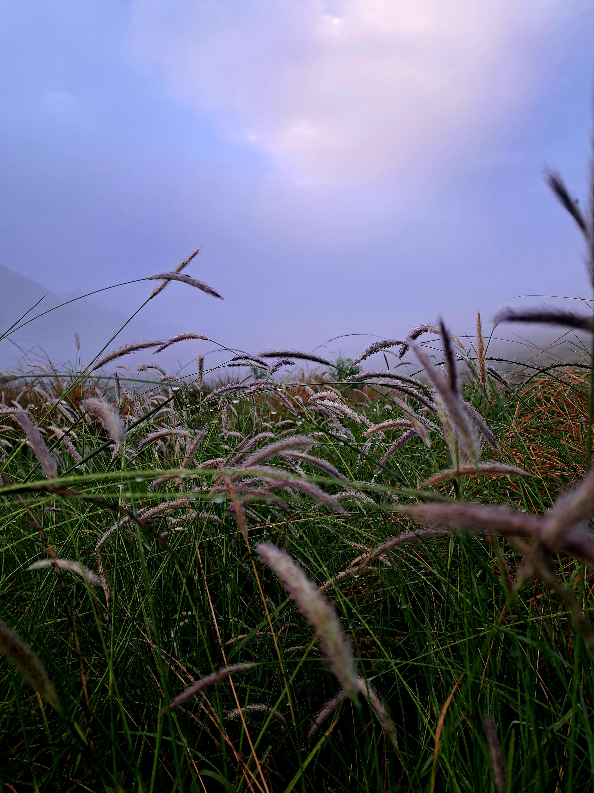

A few weeks ago, six of us, armed with our adventurous spirits, set
out on a journey from Kandy to Bogawantalawa on three bikes. The plan
was simple: enjoy the ride, camp under the stars, and explore the
beauty of Haritha Kanda. We packed our tents, got police permission
for the campsite, and hit the road, ready for an experience that none
of us would forget.
The moment we left Kandy, we knew we were in for a scenic treat. The
road itself felt like a journey through a natural painting. As we rode
along the winding roads, the views became more and more surreal. We
passed lush green valleys, tea estates that stretched endlessly, and
mist-covered mountains in the distance. The early morning sun bathed
everything in a golden glow, making the trees shimmer and the air feel
crisp. There were times when we had to slow down just to take it all
in - the fresh air, the cool breeze, and the serene landscape were a
welcome break from our usual hustle in the city.

Climbing Into Bogawantalawa
As we neared Bogawantalawa, also known as the
"Golden Valley of Tea,"
the views only got better. The sea of tea plantations, spread out like
a green carpet, was absolutely breathtaking. With each twist and turn
in the road, we were met with views of cascading hills covered in tea
bushes, with small villages dotted along the way. We stopped multiple
times just to click photos and take short breaks, gazing at the neatly
lined tea plants, with the distant mountains playing hide and seek
with the clouds. It felt like we were riding through a postcard.
Setting Up Camp at Haritha Kanda
Once we reached Bogawantalawa, we headed to our chosen campsite at
Haritha Kanda. After getting the necessary permission from the local
police, we began setting up our tents. It was an ideal spot - slightly
elevated, giving us a panoramic view of the valley below. The sun was
starting to set, casting a warm glow over the hills, and we knew we
were in for a beautiful night. As darkness fell, the stars came out in
full force. We sat around, telling stories, laughing, and enjoying the
calm that enveloped us. It was the kind of peace you rarely find in
day-to-day life. No phone signals, no distractions - just us, the
crackling of our campfire, and the sound of nature.

The Morning After: A Sunrise to Remember
Waking up the next morning was nothing short of magical. The mist had
rolled in overnight, and as the sun slowly rose, it began to burn it
away, revealing the green landscape beneath. The cool morning air was
filled with the scent of fresh tea leaves, and the view of the sun
rising over the mountains was the perfect way to start the day. We
brewed some tea, packed up our tents, and got ready to head back. But
none of us were really ready to leave. Haritha Kanda had cast its
spell on us, and the ride back was filled with conversations about
when we'd come back again.
Until Next Time
This trip was more than just a getaway - it was a reminder of how
beautiful and peaceful the world can be if you just take the time to
explore it. Riding with friends, camping under the stars, and
experiencing the raw beauty of Haritha Kanda was an adventure none of
us will ever forget. We'll definitely be back. But for now, the
memories we made will keep us company until the next trip.